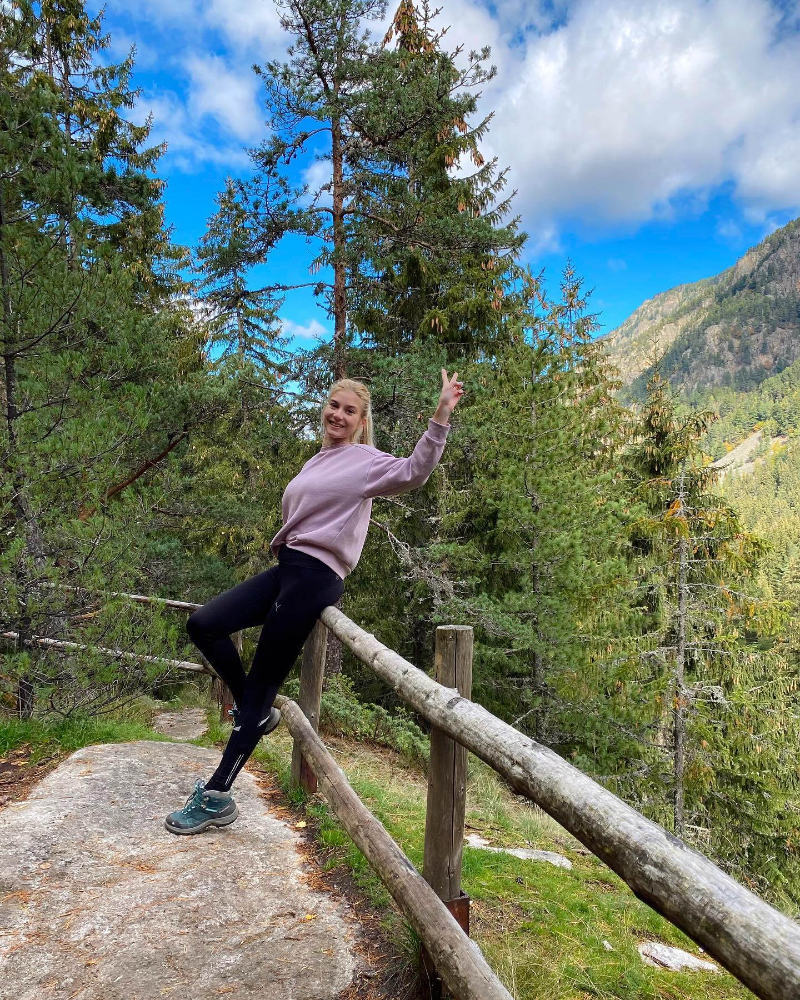

About Me
I am a Junior QA Engineer, eager to improve my skills. I work at a Bulgarian startup and simultaneously learn and practice HTML & CSS.
My role is to ensure final products meet quality standards, including preparing QA policies, performing inspections, and collaborating with teams to resolve issues.
This website is part of my learning journey in HTML & CSS. Thanks for visiting!
Regards,
Lora
Projects

Achievements
-
Manual Software Testing
- October 2022
- Software Testing Foundations; SDLC; Testing techniques and Web Services
-
Bachelor in Journalism
- June 2022
- Successfully finished my bachelor's in Journalism at Sofia University
-
Cambridge Advanced Certificate
- February 2015
- High-level English qualification for academic and professional use
Contacts
- Email: lora.antonova@icloud.com
- Phone: +359 88 942 7173
- Location: Sofia, Bulgaria